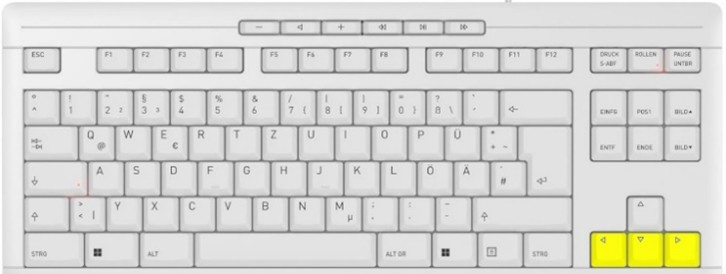
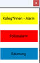
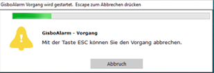
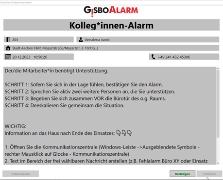
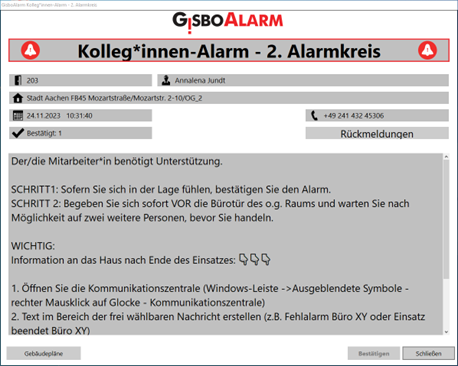
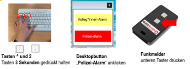
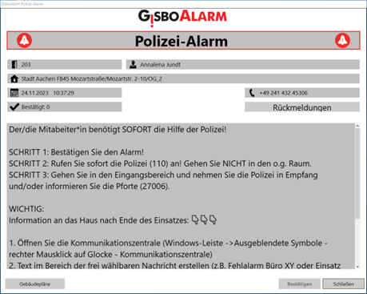

Verbaler Übergriff, Sachbeschädigung, unangepasstes Sozialverhalten
Per Tastatur...

Die Tasten Pfeil nach links, Pfeil nach unten und Pfeil nach rechts für mind. 3 Sekunden gleichzeitig gedrückt halten.
oder mit den Desktop-Buttons...

Maus-Klick auf den Gelben Button
oder mit dem Funkmelder (wenn vorhanden)
Obere Taste drücken
Nach dem absetzen eines Alarms können Sie diesen innerhalb von 10 Sekunden zurück nehmen

Mit Klick auf den Button „Abbrechen“ oder auf die Taste „esc“ (oben links auf der Tastatur) kann der Alarm gestoppt werden. Der Alarm wird dann nicht an andere Benutzer gesendet. Fehlalarme sollen so vorgebeugt werden. Nach Ablauf dieser Zeit erhalten alle Mitarbeitenden des ersten Alarmkreises eine Benachrichtigung (optisch und akustisch).
Im ersten Alarmkreis befinden sich alle Mitarbeiter*inne Ihrer Etage
Im Alarmmeldungsfenster können alle für diesen Alarmtyp relavanten Handlungsanweisungen nachgelesen werden.
Auf allen Bildschirmen, welche sich in der gleichen Etage befinden, wird dieses Alarmfenster angezeigt und es ertönt ein Alarmton. Dies passiert 20 Sekunden lang bzw. bis eine andere Person auf der Etage den Alarm bestätigt. Parallel dazu werden alle Abteilungsleitungen über den Alarm informiert.
Das Alarmfenster schließt sich auf allen Bildschirmen des Alarmkreises, sobald der Alarm von einer Person quittiert wird. Nur für die Person, die den Alarm quittiert, sind die Handlungsanweisungen noch nach der Bestätigung sichtbar. Bestätigen Sie daher den Alarm, schließen Sie jedoch nicht die Alarmmeldung an sich!

Wie kann ich helfen?
Sollte der Alarm innerhalb von 20 Sekunden von keinem Mitarbeitenden der Etage quittert werden, "eskaliert" der Alarm zu einem Kolleg*innen-Alarm 2. Alarmkreis

Auf allen Bildschirmen im gesamten Gebäude, wird dieses Alarmfenster angezeigt und es ertönt ein Alarmton. Dies passiert 20 Sekunden lang bzw. bis eine andere Person auf der Etage den Alarm bestätigt. Parallel dazu werden alle Abteilungsleitungen über den Alarm informiert.
.accordion-body, though the transition does limit overflow.
Drohender körperlicher Übergriff, Einsatz von Waffen, Nötigung

Nach dem absetzen eines Alarms können Sie diesen innerhalb von 10 Sekunden zurück nehmen
Mit Klick auf den Button „Abbrechen“ oder auf die Taste „esc“ (oben links auf der Tastatur) kann der Alarm gestoppt werden. Der Alarm wird dann nicht an andere Benutzer gesendet. Fehlalarme sollen so vorgebeugt werden. Nach Ablauf dieser Zeit erhalten alle Mitarbeitenden des ersten Alarmkreises eine Benachrichtigung (optisch und akustisch).
Der Polizei-Alarm wird direkt an das ganze Dienstgebäude gesendet und "eskaliert" nicht in einen weiteren Alarmkreis.
